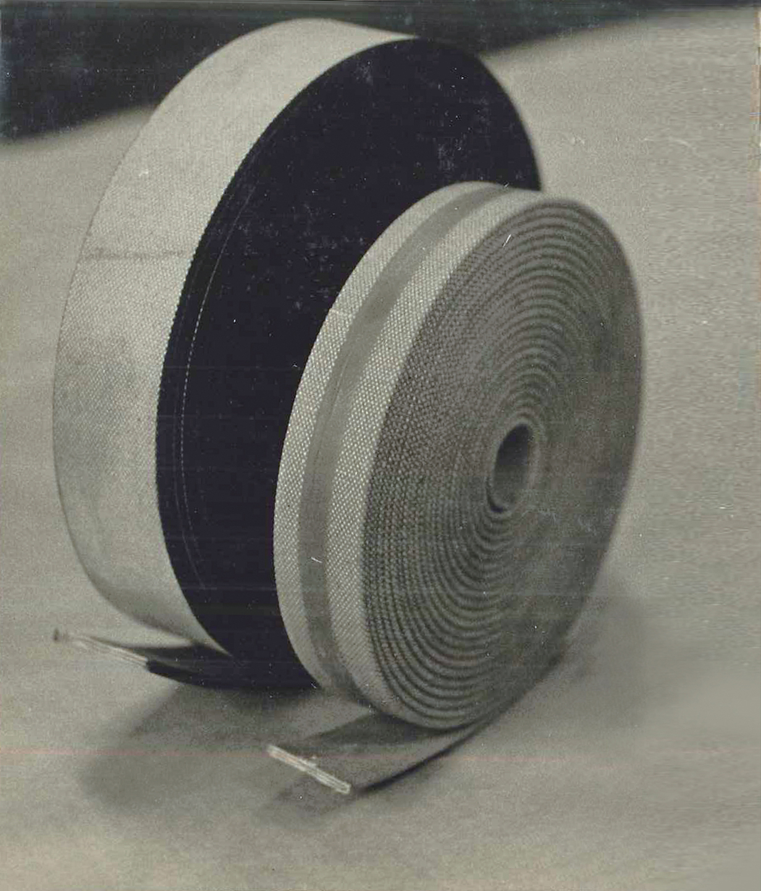
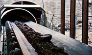
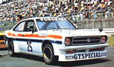
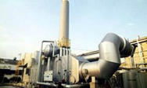
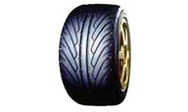
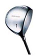

TOPICS
TOPICS
1884-1929
Establishment of The Yokohama Rubber Co., Ltd.
Established the Yamada Cable Works

Yamada Cable Works established in Yokohama City by Yoshichi Yamada in 1884 contributed significantly to advancement of the cable industry.
Founded the Yokohama Electric Cable Manufacturing Company

Established following acquisition of Yamada Cable Works (photo circa 1910).
Furukawa Co., Ltd. acquired management rights of Yokohama Electric Cable Manufacturing Company
BFGoodrich Headquarters (Akron, Ohio, United States)

U.S.-based BFGoodrich establshed a sales base in Marunouchi, Tokyo, for the import and sale of belts.
Established The Yokohama Rubber Co., Ltd., on October 13
The Yokohama Rubber Co., Ltd. was established as a joint venture between Yokohama Electric Cable Manufacturing Company (predecessor of today’s Furukawa Electric Co.) and U.S.-based BFGoodrich. The photo shows Suekichi Nakagawa, a director at Yokohama Electric Cable who was instrumental in the Company's establishment and later became the second president.
Announcement of the start of business
Annoucement placed in the Tokyo Asahi Shimbun newspaper on December 4, 1917 regarding the start of operations.
Hiranuma Plant

Construction of the company’s first production facility, the Hiranuma Plant, was completed in Hiranuma-cho, Yokohama. The plant began producing belts, tires and other products using refining processes and belt, hose and tire manufacturing equipment from the U.S.
The Hiranuma Plant was completely destroyed by the Great Kanto Earthquake
'The office, factory, warehouse, etc., of the Hiranuma Plant were reduced to ashes a mere two years and a few months after opening when the Great Kanto Earthquake struck on September 1, 1923. Important documents were also destroyed in the fire. The concrete chimney stacks collapsed midway up and cracks appeared throughout the factory.
The completed Yokohama Plant
The roughly 6,500 square meter one-story plant was completed on December 5, 1928 along with ancillary facilities such as the boiler room, pump room and machine shop. Full-fledged operations commenced in May 1929.
Officials involved with belt production at Yokohama Plant
Developed Japan’s first corded tire, the Hama Town Cord
Although automobile tire production depended on imports from BFGoodrich due to the time required for worker training and research into quality, the Company embarked on its own trial production of corded tires in 1921. Production commenced thereafter and the life of the tire was extended by three years.
Developed a cut-edge flat belt

The YOKOHAMA Rubber Co.,Ltd. produced a cut-edge flat belt where the edge is cut and covered with special rubber. The cut-edge flat belt was employed by top-ranking companies such as BFGoodrich on account of its durability, superiority to leather belts and ability to be mass-produced.
Successfully produced V-shaped belt internally
Production and sale of the V-shaped belt commenced in March 1929. The new Goodrich V-shaped belt, which was subsequently renamed the Hama Belt, revolutionized the belt industry thanks to a multitude of features that included enabling high-speed driving, long life and exceptional quietness.
1930-1939
Breakthrough to industry leader
Expanded Yokohama Plant
A site east of the plant measuring around 4,500 square meters was purchased in November 1932 and design for a tire plant began in 1933. Construction commenced in March 1934 with the building measuring roughly 2,500 square meters, equipment such as mixing rolls, a vulcanizer and tire building machine, and the factory itself being completed in June.
Transferring crude oil to a shipping vessel using a bandless hose
A hose that prevented leaks when refueling ships and transferring oil to land-based tanks was completed in April 1934. This bandless hose was put to full use by the Japanese army after acquiring a patent in Japan and the U.S.
Tire trademark name changed from Goodrich to YOKOHAMA
Completed Hamalock [HAMA LOCK], Japan's first rubber lining-type product

The Company employed the Vulcalock production method and started production under the name Hamalock [HAMA LOCK] in November 1930. This unique method involved affixing rubber to metal by way of vulcanization. This was the first rubber lining developed in Japan.
Developed the Safety Tire
Logically considering the shape and alignment of the tread pattern and changing the shape of the tread shoulder minimized tire slipping. In addition, a more rational tread pattern alignment resulted in uniform tire wear and strong market support as an economical tire.
Developed the Giant Truck Tire
The Giant Truck Tire launched in autumn 1934 eliminated tread friction, fabric separation and slipping that were common phenomena with trucks, and featured an inventive tread pattern and depth to help cope with heavy loads.
Developed the new V-shaped belt
The head of the engineering department made partial improvement to the structure in 1934 and conceived of the new V-shaped belt. The use of cable cord resulted in minimal stretching of the belt. The technology was born during research into a fan belt for automobiles for Ford Motor Company, which required a belt with exceptional flexibility.
Developed No. 100 Tire
The quality of rubber used in the Giant Truck Tire was improved and the cord strengthened in response to demand from customers, many conducting long distance transportation.
Developed a Y-shaped truck tire
This tire was sold as the Y-shaped truck tire in April 1937 as an enhanced version of the No. 100 Tire. Unique features included the Y-shaped tread pattern, the ability to inhibit the spread of cuts thanks to a continuous pattern, deep grooves effective in preventing slipping, minimal wear owing to a broad ground contact area, and highly effective braking.
1940-1949
Pacific War years
Plants inspected by army
The prolonged Sino-Japanese war led to ongoing consumption of supplies and skyrocketing commodity prices, driving a shift from a free economy to a controlled economy, and the entire nation strengthened its support of the military.
Commemorated production of the first tire and tube at Yifeng Rubber Ammunition Factory Co., Ltd.
Yifeng Rubber Ammunition Factory Co., Ltd. was established in Tianjin in 1941 by way of joint investment by Yokohama Rubber, Chuji Idebuchi along with Toyobo Co., Ltd. and Toyota Boshoku Sho. following an agreement on a tie-up concerning rubber-related business in China with the latter two companies. This company started producing automobile tires in addition to belts, molded products and rickshaw tires.
Established rubber plant in Singapore
Completed third phase of expansion work at Yokohama Plant
Continued expansion of the Yokohama Plant (photo circa 1943)
Established Mie Plant in Mie Prefecture
Production equipment for tires and tubes that had been removed from the Yokohama Plant was shifted to the Mie Plant. Trial production for tires was completed on June 29, 1944, and an opening ceremony was held soon after on July 15.
Destruction at the plant
Office facilities and a raw material warehouse at the Yokohama Plant were burned to the ground and a factory for industrial goods was partially destroyed in an air raid on April 3, 1945. The Keihin air raid on April 14 destroyed all plant buildings, an affiliated school for youth, seven dormitory buildings and 14 company housing units.
Established Mishima Plant in Shizuoka Prefecture
Established technical research center at Fujisawa Plant
Buildings and machinery remained unscathed when the war came to an end. However, since the research center was reduced to ashes following damage to the Yokohama Plant, a technical research center was newly erected at the Fujisawa Plant in April 1946. Production of foam rubber commenced thereafter and was employed exclusively in special second-class passenger seats on Japanese National Railways (currently East Japan Railway, or JR) trains in 1950.
Started producing aircraft tires
The Mie Plant was established after acquiring the land and buildings of the Miyagawa Plant (Misono-mura, Watarai District, Mie Prefecture) owned by Toyo Boseki Co., Ltd. (now Toyobo Co., Ltd.) in 1943. The plant began producing tires and tubes for naval aircraft and supplementary rubber products for aircraft.
1950-1959
Dawn of post-war era
Established Kanamachi Gomu Kogyo K.K.
The Kanamachi Plant was spun off with capital of ¥15 million in February 1950. Kanamachi Gomu Kogyo K.K. was then established as a second company.
Visit by Prince Nobuhito Takamatsunomiya

Prince Nobuhito Takamatsunomiya came to inspect the Hiratsuka Plant in March 1954.
Signed technology licensing agreement with Taiwan’s Nankang Rubber Tire Corporation
Developed the Y29, Japan's first snow tire
Launched HAMA SAFETY and HAMA LINER, Japan’s first tubeless tires
HAMA SAFETY
Developed large pneumatic rubber fender
Launched HAMATITE® sealant made from a rubber and resin compound
1960-1969
Period of rapid economic growth
Completed construction of new corporate headquarters, the Yokohama Rubber Building

Gathering to unveil new company name
Japanese company name changed to match the English, The Yokohama Rubber Co., Ltd., on October 1, 1963.
Birth of the Smile Shop
This advertisement was placed in the PR magazine Tire (September 5, 1963 issue). The “Smile” mark used in sales promotion activities for truck and bus tires was borrowed from BFGoodrich, the color changed and the “Smileage” mark created by combining the words “smile” and “mileage.” The “smile signboard” that originated in the U.S. helped to build up the image of Yokohama tires just as people were starting to own their own cars.
Shinshiro Plant in Aichi Prefecture began operations
Photo circa 2010
Constructed HAMATITE® (sealants) plant in Nakahara, Hiratsuka-shi
Photo circa 2006
50th anniversary celebration
An grand 50th anniversary celebration was held at the Tokyo Prince Hotel in Shiba-Koen on October 12, 1967 with around 400 guests. Commemorative events inviting relevant persons were also held at respective plants and branch offices, including the Hiratsuka Plant.
Tire production line at Shinshiro Plant
At first, tire cord, tread and bead products were supplied from the Mishima plant since the Shinshiro Plant only had two tire production processes in its facility. An integrated production system was established at the Shinshiro Plant in 1967.
Completed tire test course at Hiratsuka Factory
Established Yokohama Tire Corporation as US tire sales company
Photo circa 1971
Conducting research on a radial tire for passenger cars
Yokohama Rubber’s steel cord conveyor belts adopted by Joban Coal Mining Co., Ltd.
Launched sales of G.T. SPECIAL and G.T. SPECIAL XX radial tires for passenger cars
G.T. SPECIAL tires for use on standard highways and G.T. SPECIAL XX tires for use in sports [motorsports] such as rallies and gymkhana carved out a path to a new era for radial tires in Japan on the back of a meteoric rise in popularity.
1970-1979
Tire export growth and start of local production via technical tie-ups
Established Yokohama Aeroquip Co. in joint venture with U.S.-based Aeroquip A.G.
Signed manufacturing technology licensing agreement with South Korea’s Hankook Tire Mfg. Co., Ltd.
Took equity stake in Ethiopia’s Addis Tyre Co. S.C.
Started production of high-pressure hoses at Ibaraki Plant
Started production of off-the-road (OR) tires at Onomichi Plant
Installed German-made equipment for producing a 3.2-meter wide steel cord conveyor belt at the Hiratsuka Factory
Launched sales of G.T. SPECIAL STEEL, Japan’s first steel radial tubeless tire
Launched sales of Surfam, an all-weather, highly elastic paving material
Launched sales of G.T. SPECIAL SEALEX, a passenger car tire with an automatic puncture-sealing function
Launched sales of Japan’s first truck/bus radial steel tires with an aramid-fiber carcass
Rally cars equipped with G.T. SPECIAL tires won the Safari Rally Championship and the Southern Cross Rally. The Southern Cross victory marked the fifth year in a row (1972-76) a G.T. SPECIAL‒equipped car won the rally
Developed the Y-801 and Y-802 racing tires for touring cars (Y-801 for dry conditions, Y-802 for wet conditions)
G.T. SPECIAL Sunny equipped with tires
Launched sales of ADVAN HF for passenger cars
1980-1989
HPT (High Performance Tire) Yokohama's full-fledged foray overseas
Signed technology licensing agreement with Indonesia’s P.T. Gajah Tunggal
BFGoodrich sold its majority share in The Yokohama Rubber Co., Ltd. to Japanese companies
Consolidated Australian tire sales companies into new subsidiary Yokohama Tyre Australia Pty. Ltd.
Signed technical assistance agreement with Taiwan’s SC Kingflex Corporation
Signed technology licensing agreement with Ceat Tyres of India Limited
Established Yokohama Tire (Canada) Inc. as Canadian tire sales company
Built the D-PARC comprehensive tire proving ground in Ibaraki Prefecture
Took equity stake in South Korea’s Hankook Tire Mfg. Co., Ltd.
Signed technical and management support agreement with Taiwan’s Nankang Rubber Tire Corporation
Established GTY Tire Company in the United States in a joint venture with U.S. company General Tire and Toyo Tire and Rubber Co., Ltd.
Established the T*Mary winter tire test course in Takasu-cho, Kamikawa-gun, Hokkaido
Established YH America Inc. in the United States to assemble automotive hydraulic pressure hoses
Established Yokohama Reifen GmbH as a tire sales company in Germany
Acquired U.S. tire maker The Mohawk Rubber Company
Launched sales of ASPEC AX-323 for passenger cars
Launched sales of G.T. SPECIAL GRAND PRIX for passenger cars
Developed lavatory module for Boeing 757
Developed water tank for Boeing 757 and 737
Launched sales of GRAND PRIX GX-501 for passenger cars
The ADVAN March racing car won the second race of the All Japan F2 Championship, the car’s first victory
Began use of the Performance Y logo mark
Became the exclusive supplier of official tires for the 1st Macao F3 Grand Prix
Launched sales of PRGR (ProGear) golf equipment.
「PRGRカーボンドライバー
Launched sales of GUARDEX, a studless tire for passenger cars
Launched sales of GETTAR, Japan’s first radial tire for motorcycles
Launched sales of INTECH 60 (SX705) for passenger cars
Launched sales of TY715, a tubeless tire for trucks and buses
Launched sales of GRAND PRIX Europe M3 for passenger cars
Launched sales of SCIENCE 2070 for passenger cars
Launched sales of PRGR Driver μ-240
Launched sales of CRITERIA (CX603) for passenger cars
ADVAN Porsche equipped with ADVAN racing tires won the Japan Endurance Championship series for the third consecutive year
ADVAN ポルシェ
Launched sales of ADVAN GLOBA, a passenger car tire with an asymmetric tread pattern
Launched sales of RY038, a truck/bus tire based on the STEM theory
Launched sales of the long golf iron INTEST LX (nickname: Tarako)
Launched sales of PRGR M30 ladies’ golf clubs
High-performance passenger car tire A008P receives technical certification from Porsche
Launched sales of A.V.S-T30, a high-performance passenger car tire
1990-1999
Multiple Business strengthens overseas operations
Completion of an R&D integrated center (RADIC) at the Hiratsuka Factory
Formulated the company’s basic philosophy, “To enrich people’s lives and contribute to their greater happiness and well-being by devoting our wholehearted energies and advanced technology to creation of beneficial products”, and an accompanying corporate slogan, “Excellence by nature”
U.S. subsidiary Yokohama Tire Corporation absorbs Mohawk Rubber Company, also a U.S. subsidiary, and Mohawk Rubber’s non-tire business is spun off into a new subsidiary, SAS Rubber Company
Formulated Environmental Action Plan targeting the elimination of chlorofluorocarbons (CFCs) and reduction of carbon dioxide emissions
Established Yokohama Tire Philippines Inc. as a tire manufacturing/sales subsidiary
Acquired all shares of Yokohama Aeroquip Co. and changed corporate name to Yokohama Hydex Co.
Established Yokohama Rubber (Thailand) Co., Ltd. to manufacture automotive sealants and assemble high-pressure hoses
Established Yokohama Tire Vietnam Company as a tire manufacturing/sales subsidiary
Issued first environmental report (currently, "CSR Report")
Environment Action Plan revised with a view to strengthening environmental activities
Mishima Plant becomes first Yokohama Rubber’s plant in Japan to receive ISO 14001 certification
All Yokohama Rubber plants in Japan receive ISO 14001 certification
Hiratsuka Factory introduces cogeneration system as part of efforts to reduce energy consumption
Launched sales of SY101, a studless tire for trucks and buses
Passenger car tire ADVAN A022 H1 adopted as original equipment on Japan models of Honda NSX
Launched sales of Flex Line, a cylindrical conveyor belt that prevents scattering of the transported object
Launched sales of ADVAN NEXUS for passenger cars
Launched sales of STEM RY 208 tire for trucks and buses
Launched sales of high-performance bicycle ASCLE MS-011
Launched sales of GUARDEX K2, a studless tire for passenger cars
Launched sales of A.V.S VS-5, an aluminum wheel for passenger cars
Launched sales of A.V.S EXCELEAD for passenger cars
Launched sales of PRGR Driver DATA Wood Reverse Titanium (nickname: Black Titanium)
Launched sales of ADVAN NEOVA for passenger cars
Launched sales of PRGR Driver DATA Wood Reverse SD Titanium (nickname: Red Titanium)
Launched sales of GEOLANDAR A/T for recreational vehicles
Launched sales of AVID S306 for passenger cars
Launched sales of PRGR Driver DATA Wood Reverse Type 252 (nickname: Silver Titanium)

Delivered water tanks for Boeing 777
Launched sales of ROCK UNICON conveyor belt
Launched sales of PRGR Driving Spoon ZOOM F
Launched sales of ES01 and ES02 as first offerings of new fuel-efficient DNA series of passenger car tires
Launched sales of GEOLANDAR I/T for SUVs
Launched sales of DNA GP for sports cars
Launched sales of GUARDEX K2 F720, a studless tire for passenger cars
2000-2009
Shift to growth, production expansion abroad and CSR management
Entered into an alliance with Germany’s Continental AG
Joint press conference in 2002
Established Hangzhou Yokohama Tire Co., Ltd. as a tire manufacturing/sales company in China
Formulated long-term vision, Grand Design (GD) 10
Symbol mark
Established Shinshiro-minami Plant in Aichi Prefecture

Established N.V. Yokohama Belgium S.A. as a tire sales company
Established Yokohama Tire Manufacturing (Thailand) Co., Ltd. as a tire manufacturing company
Established Yokohama Hamatite (Hangzhou) Co., Ltd. to manufacture and distribute automotive sealants in China
Established Yokohama Hoses & Coupling (Hangzhou) Co., Ltd. to assemble high-pressure hoses in China
Established Yokohama Tire Korea Co., Ltd. as a tire sales company
Established Yokohama Russia L.L.C. as a tire sales company
Established Yokohama Europe GmbH as a tire marketing company in Germany
Announced new medium-term management plan, Grand Design (GD) 100
Symbol mark
Established the Yokohama Rubber (China) Co., Ltd., as a holding company in China
Established Yokohama Tire Sales (Shanghai) Co., Ltd., as a tire sales company
Established Shandong Yokohama Rubber Industrial Products Co., Ltd. to manufacture and sell conveyor belts in China
Established Suzhou Yokohama Tire Co., Ltd. as a tire manufacturing/sales subsidiary in China
Established Yokohama India Pvt. Ltd.
Started the "YOKOHAMA Forever Forest" tree-planting project. First tree-planting ceremony was held at the Hiratsuka Factory
Held the first Global Environment Council, attended by YRC production facility managers from around the world
Established Yokohama Asia Co., Ltd. as a tire marketing company in Thailand
Established Yokohama Rubber Latin America Comercio Ltda. as a tire marketing company in Brazil
Established LLC Yokohama R.P.Z. as a tire manufacturing/sales subsidiary in Russia
Start of GD100 Phase II
Established Yokohama Industrial Products Europe, GmbH as an industrial products marketing company in Germany
Established Yokohama Tire Japan Co., Ltd. upon consolidating domestic tire sales companies
Launched sales of AVS Sport, a high-performance tire for passenger cars
Launched sales of DNA dB, a fuel-efficient tire for passenger cars
Launched sales of GUARDEX K2 F721, a studless tire for passenger cars
Team TAISON, running on ADVAN racing tires, won its class race at the 24 Hour Le Mans race
Launched sales of DNA ECOS, a fuel-efficient tire for passenger cars
AVS Sport tire received technical certification for use on the Aston Martin Vanquish
Launched sales of PRGR Driver Speed Titanium TR
Launched DNA map-RV for one-box-type vans and DNA map-i for wagon-type vans
Launched DNA dB EURO for luxury import passenger cars
Launched ice GUARD iG10, a studless tire for passenger cars
Developed HiTES, a tire-pressure monitoring system for truck/bus tires
Launched sales of Ecotex, an energy-efficient conveyor belt
Yokohama Rubber’s pneumatic rubber fender receives ISO certification

Established ADVAN as the global flagship brand and launched worldwide sales of ADVAN Sport V103
Launched sales of DNA S. drive for sports cars
ADVAN Sport V103S selected as original equipment for the Porsche 911 Carrera 4
Launched sales of PRGR Driver T3 model 105
Launched sales of GEOLANDAR A/T-S for SUVs
Chosen as the offical supplier of the control tire for the FIA World Touring Car Championship (WTCC)
Launched sales of ADVAN Sport Z.P.S, a runflat tire for passenger cars
Launched sales of DNA dB super E-spec, featuring an 80% non-petrochemical material composition
Launched sales of ZEN 102ZE, a fuel-efficient, low-maintenance tire for trucks and buses
Launched sales of DNA Earth-1 for passenger cars
Launched sales of ice GUARD TRIPLE, a studless tire for passenger cars
Launched sales of PRGR ZOOM X, a utility club
Launched sales of ADVAN NEOVA AD08 for passenger cars
Developed AIRTEX Advanced liner, enabling lighter weight tires
Launched sales of PRGR Driver egg Impact PX-01
Launched sales of Y-coat, a coating material used in household appliances and electronic devices
2010-
Focus on environmental technology and continued globalization
Began including labels indicating tire rolling-resistance and other performance indicators in line with Japan’s introduction of a new labeling system for fuel-efficient tires
Established Yokohama Industrial Products Japan Co., Ltd. upon consoldating domestic industrial products sales companies
Formulated Guidelines for the Preservation of Biodiversity
Established Yokohama Industrial Products Sales – Shanghai Co., Ltd. as a sales company for industrial products in China
Announced the construction of a hydraulic hose plant in China
Start of GD100 Phase III
Signed the United Nations Global Compact
Received integrated ISO 14001 certification for all divisions of The Yokohama Rubber Co., Ltd.
Held "YOKOHAMA Forever Forest" project tree-planting event in Iwate Prefecture in an area devastated by the 2011 Great East Japan Earhtquake and subsequent tsunami
Established Yokohama Industrial Products Asia-Pacific as an industrial products sales company in Singapore
Established Yokohama Tire Mexico S. de R.L. de C.V. as a tire sales company in Mexico
Established Yokohama Tire Manufacturing Mississippi LLC as a tire manufacturing company
Signed master technological alliance agreement with South Korea’s Kumho Tire Co., Inc.
Signing ceremony
Established Yokohama Industries Americas Inc. upon consolidating YH America Inc. and SAS Rubber Company
Acquired Italian marine hose manufacturer company.
Started partnership with Chelsea Football Club of the England Premier League
Established Batam Plant in Indonesia
Acquired Alliance Tire Group B.V.
Launched sales of BluEarth AE-01, first offering in the BluEarth series of fuel-efficient passenger car tires
Launched sales of PRGR Driver iD 455
Launched sales of BluEarth-1 AAA spec, a fuel-efficient tire for passenger cars
Launched sales of ZEN 903ZW, a studless tire for trucks and buses
Electric car equipped with BluEarth tires wins Pike’s Peak Hill Climb in the United States in record time
Launched sales of BluEarth-A, fuel-efficient tire for passenger cars
Launched sales of PRGR eggbird Driver
Launched sales of GEOLANDAR SUV tire
Launched sales of ice GUARD 5, a studless tire for passenger cars
Launched sales of ADVAN V105 as global flagship tire
Launched sales of PRGR iD 455 Driver
Developed the AERO-Y electronic vehicle concept car
Launched sales of a 49-inch large radial tire for construction and mining vehicles
ADVAN V105 MO selected as original equipment for Mercedes-Benz S Class models
Launched sales of PRGR iD nabla RED Driver
Launched sales of BluEarth AE-01F, a fuel-efficient tire for passenger cars
ADVAN Sport V105 N-0 receives technical certification for use on Porsche Panamera
Launched sales of BluEarth LT152R, a fuel-efficient tire for light trucks and buses
Launched sales of PRGR egg1 Driver
Launched sales of BluEarth RV-02, a fuel-efficient tire exclusively for minivans with a grading of "a", the highest grade for wet grip performance
Launched sales of Urban Roof NX, a range of urethane water-resistant coating materials with superior thermal insulation properties
Launched sales of GEOLANDAR H/T G056, a highway terrain tire for 4-wheel drive vehicles and SUVs
Launched sales of Ice Guard 5 Plus, a premium studless tire for passenger cars
Launched sales of PRGR NEW egg driver
Launched sales of PRGR SUPER egg driver
Launched sales of GEOLANDAR A/T G015, all-terrain tire for SUVs
Launched sales of ADVAN FLEVA V701, a high-performance sport tire for passenger cars
Launched sales of iceGUARD SUV G075 for SUVs
Launched sales of PRGR RED Driver
Launched sales of Hamatite Hyper Sealant, a high elasticity adhesive for automobile glass for users wanting greater rigidity in the car body


Copyright © 2014-2016 THE YOKOHAMA RUBBER CO., LTD. All rights reserved.